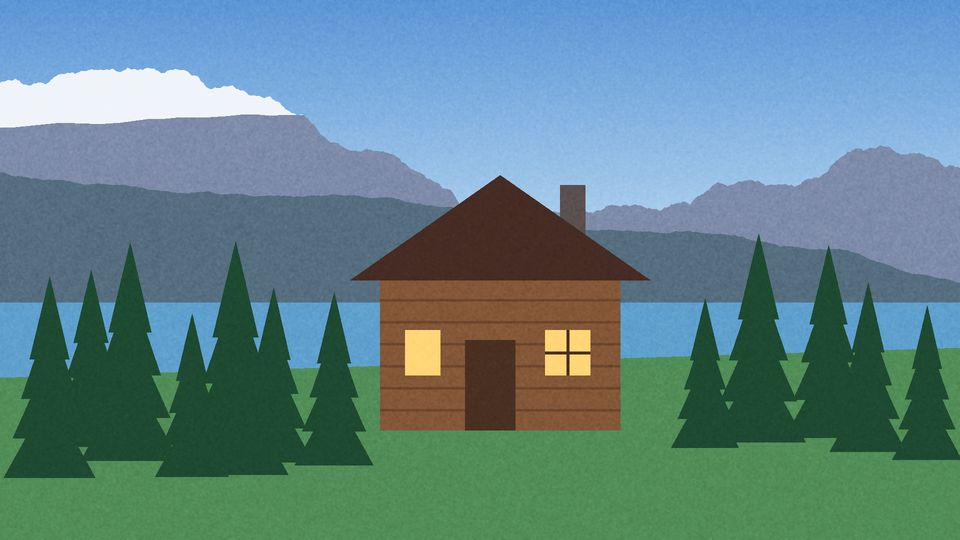

Il lago all'alba
Siamo partiti con il buio, per arrivare al lago prima del sole. L'acqua era ferma come uno specchio e le cime, una dietro l'altra, cambiavano colore: prima viola, poi rosa, poi arancione.
Nessun rumore, a parte il vento tra i pini. Siamo rimasti seduti sulla riva finché la luce non ha raggiunto il prato e l'aria ha cominciato a scaldarsi. Poi, piano, anche il lago ha preso il colore del cielo.

Il rifugio è a pochi passi dall'acqua. Ci siamo fermati lì per la colazione, con il lago davanti alla finestra.